ユニット
ユニットとは、ゲーム内で動くキャラクターや置物など、データが一つにまとまったものを指し、
ゲーム内での実体はエンティティと呼ばれます。
⭐1.基本概念
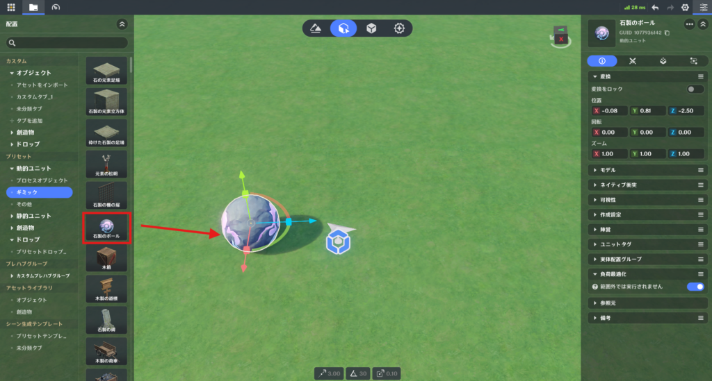
すべてのエンティティは対応するプレハブデータから生成されます。
エンティティ配置タブでアセットバーからプレハブをドラッグすると、「編集可能エンティティ」が作成されます。
🌸1.エンティティ
エンティティとは、機能を持つ最小単位のデータ集合です。
ゲーム実行中には変数として保持・受け渡しすることができます。
静的エンティティ以外は、以下を追加できます。
🌸2.エンティティGUID
編集画面上の各エンティティには、同じプレハブから作られていても固有のGUIDが割り当てられます。
GUIDはエンティティを一意に識別するIDです。
🌸3.プレハブ
プレハブは、事前に設定されたエンティティデータです。
すべての編集可能エンティティはプレハブから生成されます。
🌸4.既製プレハブとカスタムプレハブ
システムには以下の既製プレハブが用意されています。
また、既製プレハブを編集して独自のカスタムプレハブとして保存できます。
🌸5.プレハブID
各プレハブには一意のIDがあります。
ノードグラフからエンティティを作成できるのは、「動的プレハブ」「創造物プレハブ」のみです。
⭐2.ユニットの種類
ユニットには6種類あります。
⭐3.エンティティ編集と配置
🌸1.編集可能エンティティの命名と管理
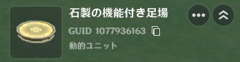
エンティティ配置タブ内の各エンティティには、「一意のエンティティ名」と「一意のGUID」が割り当てられます。
🌸2.実行時エンティティの命名とインデックス作成
実行時には、編集可能なエンティティデータから生成するか、プレハブ化されたコンポーネントを含むノードグラフを使用することで、実行時エンティティを生成できます。
🌸3.エンティティ編集
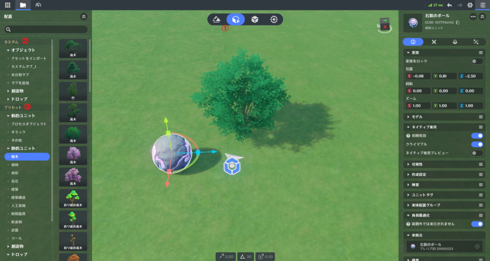
「エンティティ配置」タブ(①)を開くと、現在のプロジェクトファイルに含まれるすべてのカスタムプレハブ(②)とプリセットプレハブ(③)がサイドバーに表示されます。
エディタ画面にドラッグするか、クリックすることでエンティティをエディタ内に作成します。
「エンティティ配置」タブ内でエンティティの編集をすることはできますが、このタブで静的エンティティと動的エンティティを切り替えることはできません。
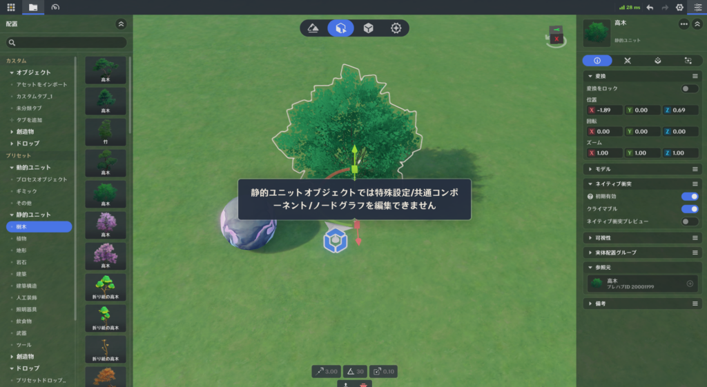
そのため、基本情報以外のタブに静的エンティティで切り替えようとすると、編集不可である旨のメッセージが表示されます。
🌸4.基本情報パネル
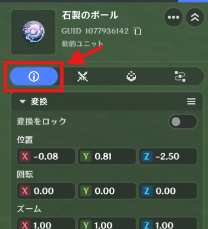
エンティティの基本属性が表示されます。
タイプによって編集可能な項目が異なります。
🌸5.専用設定パネル
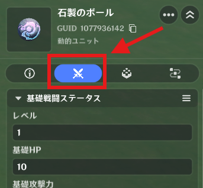
>以下の戦闘関連設定が可能です。
🌸6.共通コンポーネントパネル
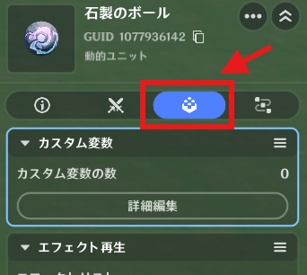
エンティティへ機能を追加する主要システムです。
「追加」「編集」「削除」が可能です。
一部のエンティティでは、あらかじめコンポーネントが追加されていることがありますが、これらは必要に応じて自由に追加や削除が行えます。
🌸7.ノードグラフパネル
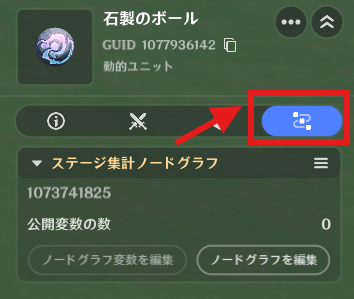
クリエイターが作るカスタムロジックスクリプトです。
「追加」「編集」「削除」によってエンティティへ独自機能を実装できます。
⭐4.詳細パネル
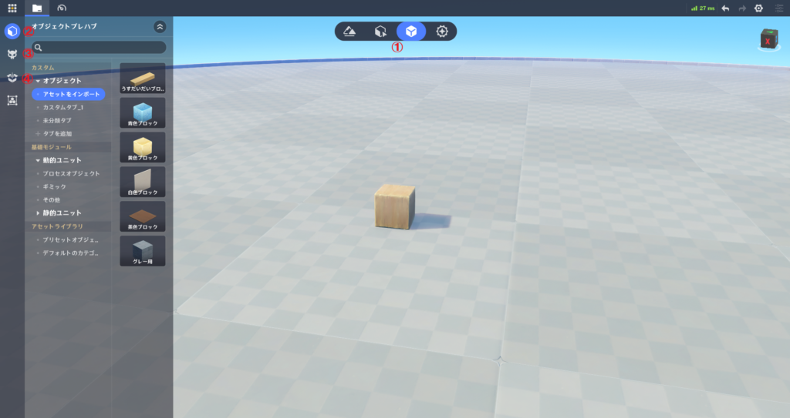
プレハブライブラリ(①)に入った後、ステータスバーにあるオブジェクトアイコン(②)をクリックすると、オブジェクトプレハブ画面へ、創造物アイコン(③)をクリックすると、創造物プレハブ画面へ、ドロップアイコン(④)をクリックすると、ドロッププレハブ画面へアクセスできます。
作成したプレハブは、タブを追加して自由に管理することができます。
🌸1.命名と管理
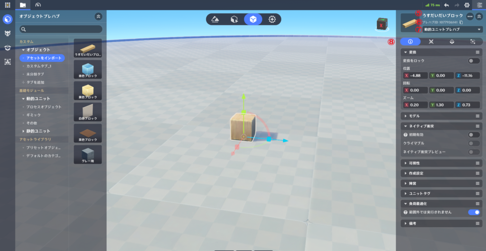
保存時、プレハブ名(⑤)は一意である必要があります。
保存後にプレハブには一意のプレハブID(⑥)が生成されます。
ドロップダウンメニュー(⑦)から動的エンティティ用のプレハブ または 静的エンティティ用のプレハブに変更できます。
幻境ステージに配置できる動的エンティティの数には上限があります。
そのため、外観用に動的エンティティを使用している場合は、静的エンティティに変更するなどの工夫が必要になります。
プレハブには機能を追加するための4つのタブがあります。(⑧)
🌸2.詳細編集パネル
エンティティと同じです。
🌸3.プレハブ保存
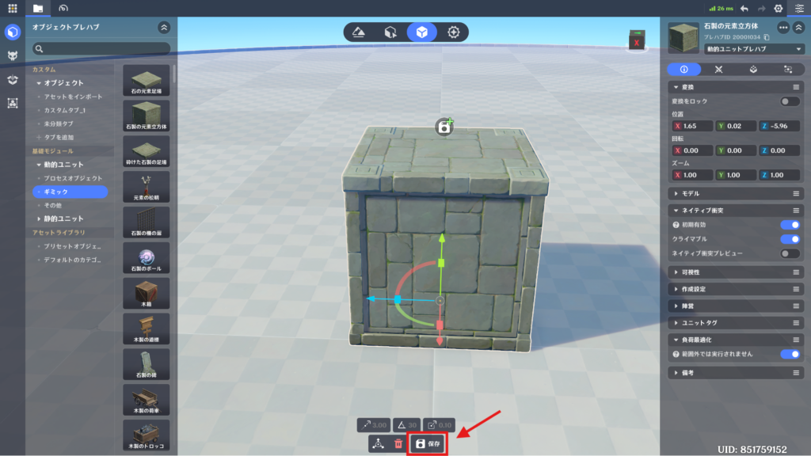
画面下部にある「保存」ボタンをクリックすると、カスタムプレハブと保存され、指定したタブ内に表示されます。
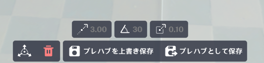
カスタムプレハブを編集している場合は、「プレハブを上書き保存」をクリックすることでカスタムプレハブが更新されます。
「プレハブとして保存」をクリックすると、別の新しいカスタムプレハブとして保存されます。
動的プレハブや創造物プレハブは、実行時にノードグラフの「プレハブを作衛」ノードを介して、実行時エンティティとして直接作成できます。
プレハブをシーン内にドラッグしてエンティティの作成に成功した後は、そのエンティティに対して行ったいかなる変更も、元となったプレハブには一切影響しません（完全に独立しています）。
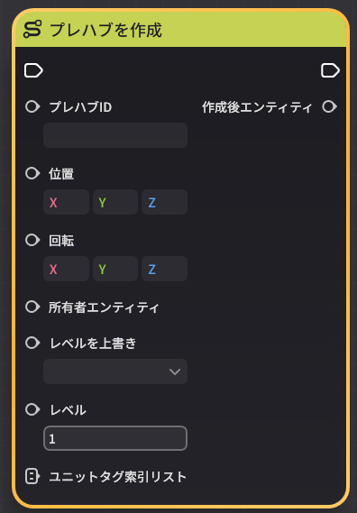
プレハブをシーン内にドラッグしてエンティティの作成に成功した後は、そのエンティティに対して行ったいかなる変更も、元となったプレハブには一切影響しません（完全に独立しています）。
⭐5.一時エンティティ
ノードグラフの「プレハブを作成」ノードを使用すると、ゲーム実行中に直接エンティティを生成できます。これを一時エンティティと呼びます。
通常のエンティティとの違いは、「編集用のGUID」を持たないことだけで、それ以外の挙動は同じです。
⭐6.静的エンティティ
静的エンティティは以下を編集できません。
プレイヤーは実行中にアクセスできず、主に背景や地形装飾用として使用されます。
また、静的エンティティは「プレハブを作成」ノードで生成できません。
作成方法は、「静的プレハブを作る」「エンティティ配置タブから配置する」のみです。